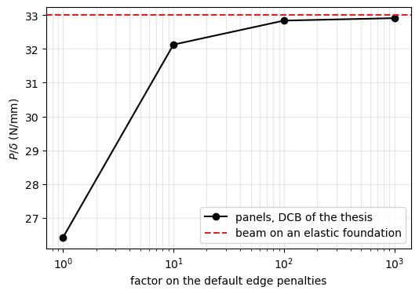

Cohesive connection 'SB_TSL': verification and linear measures of the DCB#
This notebook checks the implementation of the cohesive connection 'SB_TSL' (see Cohesive zone model) and computes, on the linear solution of the DCB of the MSc thesis of D’Souza (2024), the measures of the load at the loaded edge and the effect of the penalties of the edge connections:
the kernels of
kCSB_dmgagainst the energy of the separations;the assembly by matrix products against the Cython kernels;
the consistent tangent of
`MultiDomain.calc_kT_TSL<../multidomain_overview.rst>`__ against finite differences;the four measures of the load at the loaded edge;
the elastic stiffness of the DCB against the factor on the default penalties of
`calc_kt_kr<../multidomain_connections.rst>`__.
The models come from the unit tests of panels: the two panels of tests/multidomain/test_sb_tsl.py (_panels) and the DCB of the thesis of tests/multidomain/test_dcb_linear_measures.py (dcb_thesis_linear). Here the quantities are printed and compared with their references. The checks use small, coarse models, for which MultiDomain prints the warnings of the rules of the discretisation of a nonlinear analysis; they do not apply to these checks.
References
D’Souza, Multi-Domain Semi-Analytical Cohesive Zone Approach, MSc thesis, Delft University of Technology, 2024, https://resolver.tudelft.nl/uuid:4709f888-c032-4d9f-97e3-402dfdd47cf1.
Castro and M. V. Donadon, Assembly of semi-analytical models to address linear buckling and vibration of stiffened composite panels with debonding defect, Composite Structures 160 (2017) 232-247, https://doi.org/10.1016/j.compstruct.2016.10.026.
Kanninen, An augmented double cantilever beam model for studying crack propagation and arrest, International Journal of Fracture 9 (1973) 83-92, https://doi.org/10.1007/BF00035958.
[1]:
%matplotlib inline
import os
import sys
import numpy as np
import matplotlib.pyplot as plt
from IPython.display import Markdown, display
from scipy.special import roots_legendre
from structsolve.sparseutils import finalize_symmetric_matrix
from panels.multidomain import MultiDomain
from panels.multidomain.connections import kCSB_dmg
sys.path.insert(0, os.path.abspath(os.path.join('..', 'tests', 'multidomain')))
from test_sb_tsl import _panels
from test_dcb_linear_measures import dcb_thesis_linear
def md_table(header, rows):
"""Markdown table from a header and rows of already formatted cells"""
lines = ['| ' + ' | '.join(header) + ' |', '|' + '---|'*len(header)]
lines += ['| ' + ' | '.join(str(c) for c in r) + ' |' for r in rows]
return Markdown('\n'.join(lines))
1. Kernels against the energy of the separations#
The matrix \(\boldsymbol{K}\) of the kernels fkCSB11_dmg, fkCSB12_dmg and fkCSB22_dmg, with a penalty stiffness \(k\) that varies over the integration points, must give
for any vector \(\boldsymbol{c}\) of Ritz constants, with the separations between the lower face of the top panel and the upper face of the bottom panel, \(\Delta_u = u^t + d^t w^t_{,x} - u^b + d^b w^b_{,x}\) (and \(\Delta_v\) alike, \(\phi_x = -w_{,x}\)), \(\Delta_w = w^t - w^b\), evaluated from the fields of both panels with the same Gauss-Legendre rule. Two panels of 17 by 25 mm with different numbers of terms and thicknesses, random boundary flags, random \(\boldsymbol{c}\) and a random \(k\) field.
[2]:
rng, top, bot = _panels(1, flags_random=True)
assy = MultiDomain(panels=[bot, top], conn=[], conn_method='penalty')
size = assy.get_size()
nx, ny = 20, 12
kw = rng.uniform(0.5, 2., (ny, nx))
dt, db = sum(top.plyts)/2., sum(bot.plyts)/2.
K = kCSB_dmg.fkCSB11_dmg(dt, top, size, top.row_start, top.col_start, nx, ny, kw)
K = K + kCSB_dmg.fkCSB12_dmg(dt, db, top, bot, size, top.row_start, bot.col_start, nx, ny, kw).T
K = K + kCSB_dmg.fkCSB22_dmg(db, top, bot, size, bot.row_start, bot.col_start, nx, ny, kw)
K = finalize_symmetric_matrix(K)
c = rng.standard_normal(size)
W = np.outer(roots_legendre(ny)[1], roots_legendre(nx)[1])*top.a*top.b/4
rt = assy.uvw(c, None, nr_x_gauss=nx, nr_y_gauss=ny, eval_panel=top)
rb = assy.uvw(c, None, nr_x_gauss=nx, nr_y_gauss=ny, eval_panel=bot)
g = lambda r, k: np.asarray(r[k][0])
Du = g(rt, 'u') - dt*g(rt, 'phix') - g(rb, 'u') - db*g(rb, 'phix')
Dv = g(rt, 'v') - dt*g(rt, 'phiy') - g(rb, 'v') - db*g(rb, 'phiy')
Dw = g(rt, 'w') - g(rb, 'w')
E = np.sum(W*kw*(Du**2 + Dv**2 + Dw**2))
cKc = c @ (K @ c)
display(md_table(['quantity', 'kernels $c^T K c$', 'energy integral', 'relative difference'],
[['$\\int k \\Delta^2 dA$', f'{cKc:.10e}', f'{E:.10e}', f'{cKc/E - 1:+.1e}']]))
quantity |
kernels \(c^T K c\) |
energy integral |
relative difference |
|---|---|---|---|
\(\int k \Delta^2 dA\) |
1.8673621219e+02 |
1.8673621219e+02 |
+2.2e-16 |
2. Matrix products against the kernels#
The connection matrix is assembled with matrix products of the operators evaluated at all integration points, \(\boldsymbol{K} = \sum_\alpha \boldsymbol{B}_\alpha^\top \mathrm{diag}(w_g k_g) \boldsymbol{B}_\alpha\); the Cython kernels (use_kernels=True) loop over the terms and the points. Both integrate with the same rule, so they must agree to round-off, for both orders of the panels in the assembly and a damage history with pristine, softening and failed points.
[3]:
rows = []
for order in ('bot-top', 'top-bot'):
rng, top, bot = _panels(5, flags_random=True)
conn = [dict(p1=top, p2=bot, func='SB_TSL', tsl_type='bilinear', nr_x_gauss=nx, nr_y_gauss=ny,
k_o=5e4, tau_o=87., G1c=1.12)]
assy = MultiDomain(panels=[bot, top] if order == 'bot-top' else [top, bot], conn=conn,
conn_method='penalty')
c = rng.standard_normal(assy.get_size())
rt = assy.uvw(c, None, nr_x_gauss=nx, nr_y_gauss=ny, eval_panel=top)
rb = assy.uvw(c, None, nr_x_gauss=nx, nr_y_gauss=ny, eval_panel=bot)
c *= 0.015/np.max(rt['w'][0] - rb['w'][0])
prev = rng.uniform(0., 1., (ny, nx))
prev[prev < 0.3] = 0.
prev[prev > 0.9] = 1.
assy.update_TSL_history(prev)
K_products = assy.get_kC_conn(c=c).toarray()
conn[0]['use_kernels'] = True
K_kernels = assy.get_kC_conn(c=c).toarray()
rows.append([order, f'{abs(K_kernels).max():.3e}',
f'{abs(K_products - K_kernels).max()/abs(K_kernels).max():.1e}'])
display(md_table(['order of the panels', '$\\max |K|$', '$\\max |K_{products} - K_{kernels}| / \\max |K|$'], rows))
WARNING: SB_TSL: 6 terms along x over 17 give 0.37 terms per decay length 1/lambda = 1.06, below 1.0; recommended m = 1.25*lambda*a = 20.1, see panels.multidomain.connections.tsl_discretization
WARNING: SB_TSL: 20 Gauss points along x over 17 give 1.69 points per cohesive zone length l_cz = 1.43, below 7; recommended nx = 10*a/l_cz = 119, see panels.multidomain.connections.tsl_discretization
WARNING: SB_TSL: 6 terms along x over 17 give 0.37 terms per decay length 1/lambda = 1.06, below 1.0; recommended m = 1.25*lambda*a = 20.1, see panels.multidomain.connections.tsl_discretization
WARNING: SB_TSL: 20 Gauss points along x over 17 give 1.69 points per cohesive zone length l_cz = 1.43, below 7; recommended nx = 10*a/l_cz = 119, see panels.multidomain.connections.tsl_discretization
order of the panels |
\(\max |K|\) |
\(\max |K_{products} - K_{kernels}| / \max |K|\) |
|---|---|---|
bot-top |
1.283e+06 |
1.3e-15 |
top-bot |
1.122e+06 |
2.7e-15 |
3. Consistent tangent against finite differences#
The connection force \(\boldsymbol{f}(\boldsymbol{c}) = \boldsymbol{K}^{conn}_{dmg}(\boldsymbol{c})\,\boldsymbol{c}\) depends on \(\boldsymbol{c}\) also through the damage. Its derivative in a direction \(\boldsymbol{e}\), computed by central finite differences with a step \(h = 10^{-6}\|\boldsymbol{c}\|/\|\boldsymbol{e}\|\), is compared with the secant matrix alone, \(\boldsymbol{K}^{conn}_{dmg}\boldsymbol{e}\), and with the consistent tangent, \((\boldsymbol{K}^{conn}_{dmg} + \boldsymbol{K}^{conn}_{\dot d})\boldsymbol{e}\). The state is in the softening range, with a damage history below the current damage in part of the domain (where the damage grows) and above it elsewhere.
[4]:
rng, top, bot = _panels(3, flags_random=False)
k_o, tau_o, G1c = 5e4, 87., 1.12
conn = [dict(p1=top, p2=bot, func='SB_TSL', tsl_type='bilinear', nr_x_gauss=nx, nr_y_gauss=ny,
k_o=k_o, tau_o=tau_o, G1c=G1c)]
assy = MultiDomain(panels=[bot, top], conn=conn, conn_method='penalty')
size = assy.get_size()
c = rng.standard_normal(size)
rt = assy.uvw(c, None, nr_x_gauss=nx, nr_y_gauss=ny, eval_panel=top)
rb = assy.uvw(c, None, nr_x_gauss=nx, nr_y_gauss=ny, eval_panel=bot)
c *= 0.015/np.max(rt['w'][0] - rb['w'][0])
assy.update_TSL_history(np.zeros((ny, nx)))
_, _, _, dcurr = assy.calc_k_dmg(c=c, pA=top, pB=bot, nr_x_gauss=nx, nr_y_gauss=ny,
tsl_type='bilinear', prev_max_dmg_index=None, k_i=k_o,
tau_o=tau_o, G1c=G1c)
prev = 0.5*dcurr
prev[:, :nx//3] = np.minimum(dcurr[:, :nx//3] + 0.1, 1.)
assy.update_TSL_history(prev)
Ks = assy.get_kC_conn(c=c)
kD = assy.calc_kT_TSL(c=c)
F = lambda cc: assy.get_kC_conn(c=cc) @ cc
rows = []
for i in range(2):
e = rng.standard_normal(size)
h = 1e-6*np.linalg.norm(c)/np.linalg.norm(e)
fd = (F(c + h*e) - F(c - h*e))/(2*h)
rows.append([i + 1, f'{np.linalg.norm(Ks @ e - fd)/np.linalg.norm(fd):.1e}',
f'{np.linalg.norm((Ks + kD) @ e - fd)/np.linalg.norm(fd):.1e}'])
print(f'damaged points: {np.mean(dcurr > 0):.0%}')
display(md_table(['direction', 'secant: relative error', 'consistent tangent: relative error'], rows))
WARNING: SB_TSL: 6 terms along x over 17 give 0.37 terms per decay length 1/lambda = 1.06, below 1.0; recommended m = 1.25*lambda*a = 20.1, see panels.multidomain.connections.tsl_discretization
WARNING: SB_TSL: 20 Gauss points along x over 17 give 1.69 points per cohesive zone length l_cz = 1.43, below 7; recommended nx = 10*a/l_cz = 119, see panels.multidomain.connections.tsl_discretization
damaged points: 38%
direction |
secant: relative error |
consistent tangent: relative error |
|---|---|---|
1 |
2.9e-01 |
4.2e-10 |
2 |
5.4e-01 |
2.8e-10 |
The kernels and the matrix products integrate over the domain of the top panel and evaluate the bottom panel at the same natural coordinates, so both panels must have the same dimensions; MultiDomain raises an error otherwise:
[5]:
for use_kernels in (False, True):
_, top, bot = _panels(2, flags_random=False)
bot.a = top.a/2
conn = [dict(p1=top, p2=bot, func='SB_TSL', tsl_type='bilinear', nr_x_gauss=10, nr_y_gauss=8,
k_o=5e4, tau_o=87., G1c=1.12, use_kernels=use_kernels)]
assy = MultiDomain(panels=[top, bot], conn=conn, conn_method='penalty')
try:
assy.get_kC_conn(c=np.zeros(assy.get_size()))
except ValueError as err:
print(f'use_kernels={use_kernels}: ValueError: {err}')
use_kernels=False: ValueError: The panels of a "SB_TSL" connection must have the same dimensions, got a=17.0, b=25.0 and a=8.5, b=25.0
use_kernels=True: ValueError: The panels of a "SB_TSL" connection must have the same dimensions, got a=17.0, b=25.0 and a=8.5, b=25.0
4. Load measured at the loaded edge#
The DCB of the thesis: \(L = 65\) mm, \(b = 25\) mm, \(a_0 = 48\) mm, arms of 15 plies at 0° of 0.14 mm of AS4D/PEKK-FC, three domains per arm (the cohesive domain of 17 mm, a connecting domain of 0.015 mm and the free arm), with \(10 \times 6\) terms in the cohesive domains, \(8 \times 6\) in the others and \(60 \times 20\) integration points, the default edge penalties. The tip of the top arm is opened by a prescribed displacement imposed with \(k_w = 10^6\), below the damage onset, and the results are given per mm of opening. Four measures of the load:
\(R\), the reaction of the prescribed displacement,
MultiDomain.reaction_line_pd_xcte;\(\int k \Delta\, dA\), the area integral of the traction with the full separation,
MultiDomain.force_out_plane_damage;\(\int k \Delta^{corr} dA\), the same with the corrected separation, in which the separation behind the crack front is set to zero,
MultiDomain.correct_separation;\(\int Q_x\, dy\), the line integral of the transverse shear force of the loaded arm,
MultiDomain.force_out_plane, at the second last of 100 points along \(x\) of the free arm.
By equilibrium of the loaded arm, the integral with the full separation is the reaction. With \(k_o = 2\times10^5\) N/mm\(^3\) an opening of 1 mm exceeds the separation at damage onset, so the linear solution is computed with 0.5 mm and scaled.
[6]:
lin = {}
rows = []
for k_o in (1e4, 5e4, 2e5):
r = lin[k_o] = dcb_thesis_linear(k_o, wp=0.5)
rows.append([f'{k_o:.0e}', f"{r['R']:.3f}", f"{r['F']:.3f}", f"{r['F']/r['R'] - 1:+.1e}",
f"{r['F_corr']:.1f}", f"{r['F_corr']/r['R']:.1f}",
f"{r['F_Qx']:.3f}", f"{100*(r['F_Qx']/r['R'] - 1):+.2f}%"])
display(md_table(['$k_o$ (N/mm³)', '$R$ (N)', '$\\int k\\Delta dA$ (N)', 'vs $R$',
'$\\int k\\Delta^{corr} dA$ (N)', 'ratio to $R$', '$\\int Q_x dy$ (N)', 'vs $R$'], rows))
r = lin[2e5]
print(f"k_o = 2e5: largest separation per mm of opening {r['del_max']:.3e}, "
f"separation at damage onset {r['del_o']:.3e} mm")
\(k_o\) (N/mm³) |
\(R\) (N) |
\(\int k\Delta dA\) (N) |
vs \(R\) |
\(\int k\Delta^{corr} dA\) (N) |
ratio to \(R\) |
\(\int Q_x dy\) (N) |
vs \(R\) |
|---|---|---|---|---|---|---|---|
1e+04 |
24.985 |
24.990 |
+2.1e-04 |
388.1 |
15.5 |
24.415 |
-2.28% |
5e+04 |
25.868 |
25.873 |
+2.1e-04 |
593.1 |
22.9 |
25.280 |
-2.27% |
2e+05 |
26.413 |
26.418 |
+2.0e-04 |
839.4 |
31.8 |
25.816 |
-2.26% |
k_o = 2e5: largest separation per mm of opening 5.072e-04, separation at damage onset 4.350e-04 mm
The reaction and the integral of the traction with the full separation agree to a small round-off error that comes from the very short connecting domain; it disappears with a longer one:
[7]:
rows = []
for a2 in (0.015, 0.15, 1.5, 5.):
r = dcb_thesis_linear(2e5, a2=a2)
rows.append([f'{a2:g}', f"{r['R']:.4f}", f"{r['F']:.4f}", f"{abs(r['F']/r['R'] - 1):.1e}"])
display(md_table(['connecting domain (mm)', '$R$ (N)', '$\\int k\\Delta dA$ (N)', 'relative difference'], rows))
connecting domain (mm) |
\(R\) (N) |
\(\int k\Delta dA\) (N) |
relative difference |
|---|---|---|---|
0.015 |
26.4127 |
26.4181 |
2.0e-04 |
0.15 |
26.4329 |
26.4329 |
7.5e-08 |
1.5 |
26.5792 |
26.5792 |
5.1e-10 |
5 |
26.9437 |
26.9437 |
2.6e-09 |
5. Penalty stiffness of the edge connections#
The default penalties of calc_kt_kr for an 'SSxcte' connection between two equal laminates, \(k_t = A_{11}/h\) and \(k_r = D_{11}/h\) (Castro and Donadon 2017), make each connection a rotational spring that adds to a cantilever loaded at the tip a compliance of \(3h/a\) of its bending compliance, about 13% per connection of the DCB arm. Below, the default \(k_t\) and \(k_r\) are multiplied by a factor, with \(k_o = 2\times10^5\) N/mm\(^3\).
Reference: beam on an elastic foundation. Each arm is a cantilever of length \(a_0\) with the bending stiffness \(EI = D_{11} b\), on the foundation formed by the interface. For the symmetric opening the foundation of one arm has the stiffness \(2 k_o b\) per unit length, and the solution of a semi-infinite beam on an elastic foundation loaded at its end by the force \(P\) and the moment \(P a_0\) gives the tip deflection of each arm
the augmented DCB model of Kanninen (1973). The opening is \(\delta = 2 w_{tip}\), so \(P/\delta = 1/(2 w_{tip}/P)\). The model neglects the finite bonded length (\(\lambda \times 17\) mm \(\approx 17\)) and the transverse shear deformation, which CLPT also neglects.
[8]:
from composites import laminated_plate
E1, E2 = (138300. + 128000.)/2, (10400. + 11500.)/2
lam_prop = (E1, E2, 0.316, 5190., 5190., 5190.)
D11 = laminated_plate(stack=[0]*15, plyt=0.14, laminaprop=lam_prop).D[0, 0]
b, a0, k_o = 25., 48., 2e5
lam = (k_o/(2*D11))**0.25
la = lam*a0
w_tip = a0**3/(3*D11*b)*(1 + 3/la + 3/la**2 + 3/(2*la**3))
K_bef = 1/(2*w_tip)
print(f'D11 = {D11:.0f} N mm, lambda = {lam:.3f} 1/mm, beam on an elastic foundation: P/delta = {K_bef:.2f} N/mm')
pen = {}
rows = []
for factor in (1, 10, 100, 1000):
r = pen[factor] = dcb_thesis_linear(2e5, edge_penalty_factor=factor)
rows.append([factor, f"{r['R']:.3f}", f"{100*(r['R']/K_bef - 1):+.1f}%",
f"{100*(r['R']/pen[1]['R'] - 1) if factor > 1 else 0:+.1f}%", f"{r['del_max']:.3e}"])
display(md_table(['factor', '$P/\\delta$ (N/mm)', 'vs beam on elastic foundation', 'vs factor 1',
'$\\Delta_{max}/\\delta$'], rows))
print(f"default penalties: stiffness {100*(1 - pen[1]['R']/pen[1000]['R']):.0f}% below that with the "
f"factor 1000, separation at the crack front {100*(1 - pen[1]['del_max']/pen[1000]['del_max']):.0f}% below")
for factor in (1, 100):
print(f"connecting domain of 5 mm, factor {factor}: P/delta = "
f"{dcb_thesis_linear(2e5, edge_penalty_factor=factor, a2=5.)['R']:.3f} N/mm")
D11 = 103609 N mm, lambda = 0.991 1/mm, beam on an elastic foundation: P/delta = 33.01 N/mm
factor |
\(P/\delta\) (N/mm) |
vs beam on elastic foundation |
vs factor 1 |
\(\Delta_{max}/\delta\) |
|---|---|---|---|---|
1 |
26.413 |
-20.0% |
+0.0% |
5.072e-04 |
10 |
32.127 |
-2.7% |
+21.6% |
6.258e-04 |
100 |
32.838 |
-0.5% |
+24.3% |
6.417e-04 |
1000 |
32.911 |
-0.3% |
+24.6% |
6.434e-04 |
default penalties: stiffness 20% below that with the factor 1000, separation at the crack front 21% below
connecting domain of 5 mm, factor 1: P/delta = 26.944 N/mm
connecting domain of 5 mm, factor 100: P/delta = 32.851 N/mm
[9]:
f = np.array(list(pen))
fig, ax = plt.subplots(figsize=(6, 4))
ax.semilogx(f, [pen[k]['R'] for k in f], 'ko-', label='panels, DCB of the thesis')
ax.axhline(K_bef, color='C3', ls='--', label='beam on an elastic foundation')
ax.set_xlabel('factor on the default edge penalties')
ax.set_ylabel('$P/\\delta$ (N/mm)')
ax.grid(True, which='both', alpha=0.3)
ax.legend()
plt.show()

Discussion#
The kernels reproduce the energy of the separations to round-off, and the assembly by matrix products the kernels; the consistent tangent is the derivative of the connection force, whereas the secant matrix alone is far from it in the softening range, which is why the Newton-Raphson iterations need the damage-rate term.
The integral of the traction with the full separation is the reaction, as equilibrium requires, while the integral with the corrected separation is more than an order of magnitude larger, by a ratio that depends on \(k_o\): a scaling factor between them fixed at the first increment would distort the load after damage onset. The line integral of \(Q_x\), from the derivatives of the moments of the Ritz field, is a few percent low.
With the default penalties of the edge connections the DCB is about 20% less stiff than with large penalties, and the separation at the crack front, hence the damage onset, lags the imposed displacement by a similar amount. With large penalties the stiffness approaches that of the beam on an elastic foundation. This is why the nonlinear drivers multiply the default penalties by
edge_penalty_factor, 100 by default.